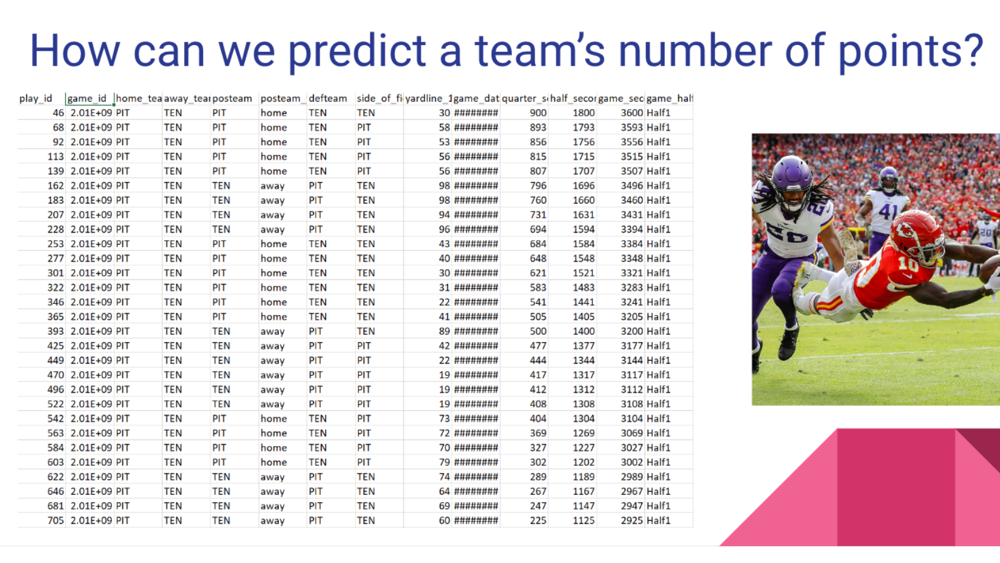
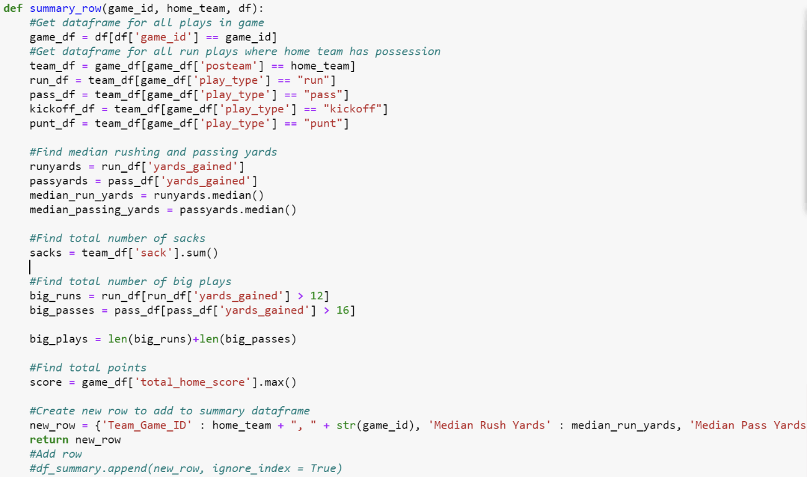

NFL Play-by-Play Insights
 In the fall of 2021, I took part in my first data hackathon at Ohio State's Data I/O, along with my teammate, Siddharth Engineer, my good friend and classmate of four years. Participants spent the full day coding solutions to a variety of problems as provided by event organizers, of which we selected the NFL play-by-play data. This dataset contained all of the NFL play data from 2009 to 2018, with each row of data being one play from one game. There were hundreds of attributes to consider, as one could imagine, including yardage, play type, score, penalties, and more. We were asked to pull some valuable insights about these plays to present to the judges panel at the end of the day.
After further discussion and planning, Siddharth and I decided that we wanted to create a model to predict the number of points a team scored during a game. Because there were so many variables to consider, we first had to do some exploratory data analysis, data cleaning, as well as variable transformation, based on our theoretical discussions. One variable that we decided to add was a big play indicator, being a play in which running yards were above 12, or passing yards were above 16. We thought that this variable, along with number of sacks, median passing and rushing yards, and total points could help us to make effective predictions. We also had to clean the data to separate plays by game and team, allowing for us to feed our new dataset into a linear regression model in R.
Although our predictions were not the most robust, and more modeling checks and considerations could have been made, this experience was my first time presenting data-driven insights from raw data, and working collaboratively to do so. I learned a lot through this experience, and continued to pursue similar projects and opportunities to develop my data problem-solving skills.
To see the GitHub repository for this project, click here.